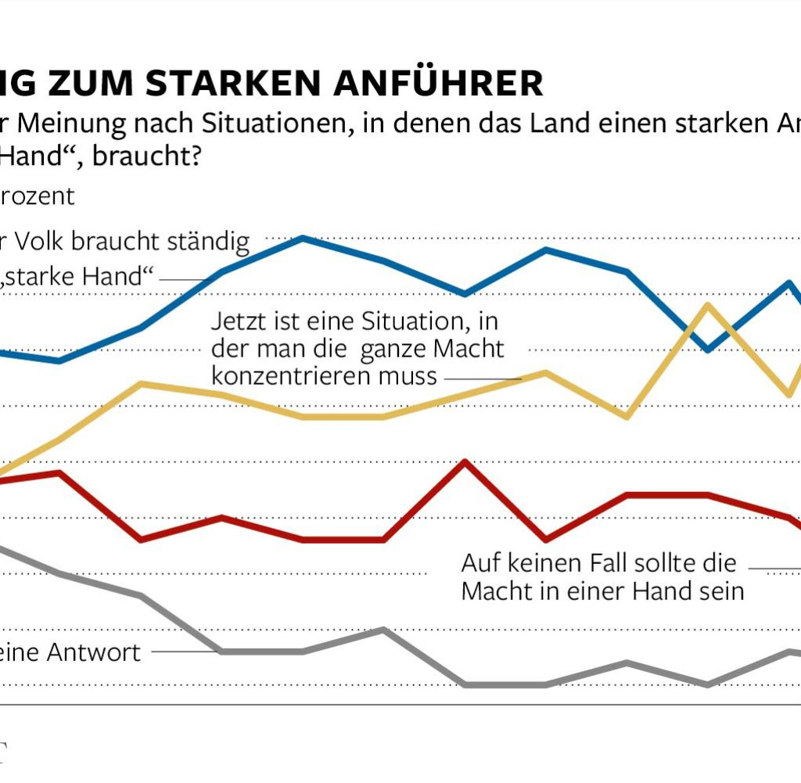

Die Annahme, die Menschen in Russland könnten gegen Wladimir Putin auf die Straße gehen, wenn es ihnen wirtschaftlich schlechter geht, war falsch. Stattdessen richtet sich die Aggression nach außen. Der Soziologe Lew Gudkow erklärt in der neuen Zeitschrift Gorby, wie das Regime die Menschen mit Großmacht-Gesten von ihrem ärmlichen Alltag ablenkt.
Das Bewußtsein, einer „Weltmacht“ anzugehören, spielt für die arme und vom Staat abhängige Bevölkerung Russlands ohne Zweifel eine wichtige kompensatorische Rolle. Der Stolz auf das eigene Land ist untrennbar verbunden mit einer schwer zu unterdrückenden Scham und dem beklemmenden Gefühl, hinter besser entwickelten Ländern zurückzubleiben („… so ein tüchtiges Volk, so ein reiches Land, und dann leben wir in ewiger Armut und Instabilität“).
Der Link zur umfrage-grossmacht-armut-krieg 